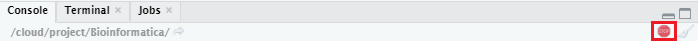
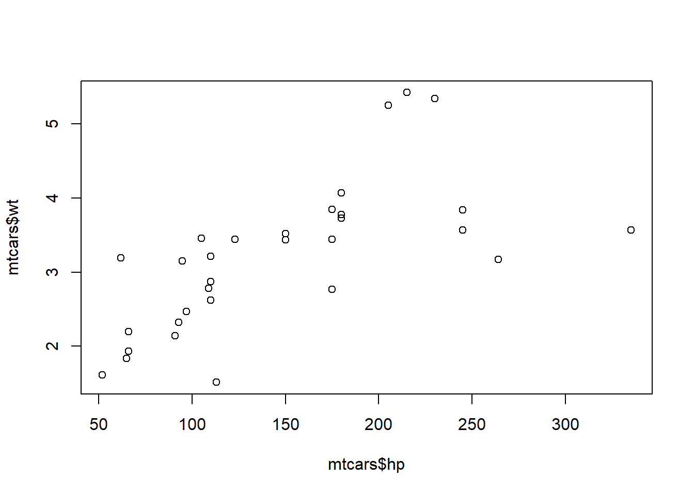
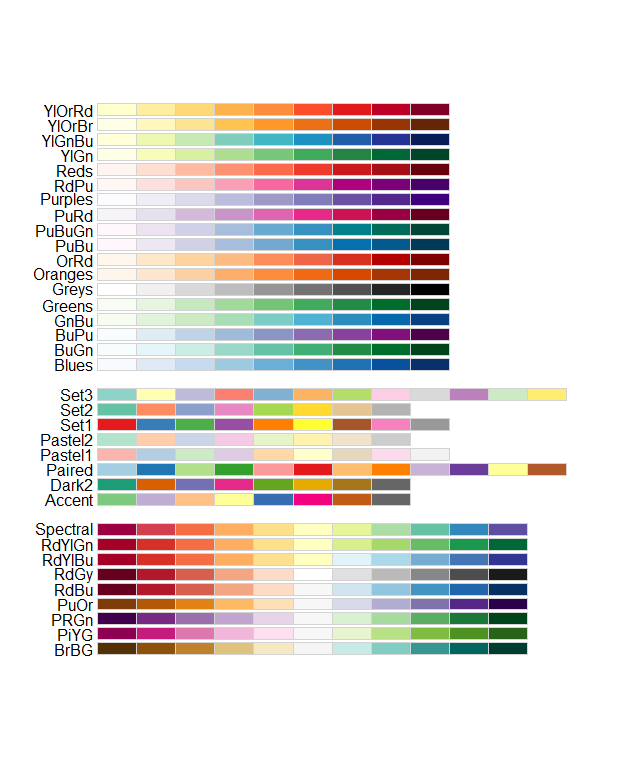

COO 3 - Introduction R - Plotting
Bas van der Velden
29 April 2020
General remarks
R style guide
As mentioned before, it is very important to create a readable code. As The tidyverse style guide says: “Good coding style is like correct punctuation: you can manage without it, butitsuremakesthingseasiertoread.”
During this course, and later in your studies, you will most likely reuse these first COOs to look up how you can use different functions and data structures. So, you need to be able to read and understand your own script, even when some of the knowledge has become rusty. Therefore, use empty lines and comments to structure your script, for example:
############################################
## ##
## Code COO2 complete ##
## Find answers to questions with Q[no.] ##
## ##
############################################
# 1.1 Reading a table file with read.table()
# Q1:
# import Mammogram dataset manually: File > Import Dataset > From Text (base) > Import
# Q2:
Heart_disease <- read.table("/Full/Path/To/COO2/Heart_disease.txt")
# Q3:
Heart_disease <- read.table("/Full/Path/To/COO2/Heart_disease.txt",
header = TRUE,
sep = ",") #remember to use commas between arguments in a function.
View(Heart_disease) #This opens the dataframe in a new window in RStudio.
# Q4: text is of type character.
# Q5: character data is data between quotes, which is interpreted as text.
# Factors can contain character data, but they have predefined levels. So, they can only
# contain variables that are already present in the factor, no new values.
# Q6: 7 levels
# Q7: It will not be possible to add another country to this column.
# Q8:
df.countries <- read.table("/Full/Path/To/COO2/Countries.txt",
header = TRUE,
sep = ",",
stringsAsFactors = TRUE)
# 1.2 Reading a tab delimited file
countriestd <- read.table("/Full/Path/To/COO2/CountriesTD.txt",
header = TRUE,
sep = "\t",
stringsAsFactors = FALSE)
countriestd # To check whether it has imported correctly.This COO
In this COO you will learn how to visualize data in plots. Next, you will learn how to save and customize your plots.
A playlist of all the HC video’s can be found here.
- Introduction
- Packages
- Plotting basics
- 3.1 Scatterplot
- 3.2 Barplot
- 3.3 Histogram
- 3.4 Boxplot
- 3.5 Heatmap
- Saving plots
- Plotting customization
- Visualization pitfalls/lies
1. Introduction
We will use some datasets that are built-in in R. To obtain some information on the dataset, you can use different commands, as introduced in the previous COO. Below, you see an example for the dataset DNase.
class(DNase)## [1] "nfnGroupedData" "nfGroupedData" "groupedData" "data.frame"dim(DNase) # the first being the number of rows, the second being the number of columns## [1] 176 3names(DNase)## [1] "Run" "conc" "density"head(DNase)## Grouped Data: density ~ conc | Run
## Run conc density
## 1 1 0.04882812 0.017
## 2 1 0.04882812 0.018
## 3 1 0.19531250 0.121
## 4 1 0.19531250 0.124
## 5 1 0.39062500 0.206
## 6 1 0.39062500 0.215View(DNase) #view results in a separate windowYou can also find information on the built-in datasets in the ‘Help’ panel:
help(DNase)Now, in the same manner, collect information on the mtcars dataset.
1. What type of R data structure is the mtcars dataset?
2. How many rows and columns does the mtcars dataset have?
3. How are the data of the mtcars dataset obtained?
2. Packages
We want to visualize the data in the mtcars dataset. There are many ways to visualize data. Base R contains a standard set of functions, but it can easily be extended. The system allows you to write new functions and share those with other users. Such sharable code is called a package.
R packages can contain multiple functions, data, documentation on how to use the functions, and much more. R packages are stored under a directory in the R environment, which is called a “library”.
In each basic version of R there are some basic graphs you can produce. In addition to those, you can install packages with which you can create other graphs. The most commonly used package for creating graphs is ‘ggplot2’.
Later on, you will use some packages that are not present in base R. Therefore, it is handy to know how to install packages and how to use them.
To install the package ‘ggplot2’, you can use the following function:
install.packages("ggplot2") # put the package name between quotation marksIt can take some time to install packages. In the console, you can see a STOP-sign when it is running code:

Wait until the STOP sign dissapears, and the > sign appears again in the Console, before running the next line of code. Before a new package can be used in the current script, you need to load it into the R environment. You need to do this every time you open a new environment. You install your package once, but you load the package every time you use it in a new environment. To see which packages are loaded in your environment, you can click on ‘Global Environment’:

To load a package, use the following function:
library("ggplot2")For every package you use in a script, it might be useful to load the libraries on the top of your script. When you open your script again in a new environment, you can run these library() commands first, to load all of the necessary packages again.
3. Plotting basics
This COO, we will only use base R plotting functions.
To find information about each plot type, you can of course use the ‘Help’ function, but there are also many online resources. A great resource that shows the basics and more advanced possibilities with plots in both ‘base R’ and ‘ggplot2’ is The R Graph Gallery. They provide many examples on how to produce and customize graphs.
You can navigate through the R graph gallery yourself to find information on different types of graphs. Look around on the website to see what types of graphs you can make with R. Under ‘chart types’ you can select the type you are interested in. If you scroll down, you will see that for most chart types there is a ‘GGPLOT2’ section with examples, and a ‘BASE R’ section.
3.1 Scatterplot
Look up the scatterplot and click under ‘BASE R’ on the first graph ‘Most basic scatterplot’. On this page you can find some information on the use of scatterplots. On the top of the page there is often a link to ‘DATA TO VIZ’, a website that provides information on how to select the right type of graph for your data. If you scroll down you see an example script and some information on how to customize your graph.
Let’s make a scatterplot ourselves. We want to display the relationship between the horsepower and weight of the cars in the mtcars dataset.
First, we need to select the correct columns. Remember that to access variables from a dataframe you can use two methods, with square brackets or with the dollar sign. In the previous COO you selected the first row of the people dataframe with people.df[1,], and the first column with either people.df[,1] or with people.df$Name.
4. Select the horsepower column with the dollar sign.
If you can’t remember the name of the column, you can of course use the head(mtcars) function, names(mtcars) or help(mtcars).
The output in your console should show the values in the horsepower column:
## [1] 110 110 93 110 175 105 245 62 95 123 123 180 180 180 205 215 230 66 52 65 97 150 150 245 175
## [26] 66 91 113 264 175 335 109For our scatterplot, we will plot the horsepower on the x-axis and the weight on the y-axis.
For other columns, this command would look like this:
plot(x = mtcars$mpg, y = mtcars$gear)5. Make a scatterplot that shows the relationship between the horsepower and weight of the cars in the mtcars dataset.
The plotviewer should show this:

You can view a larger version of the plot when you click in the plotviewer on ‘Zoom’. You can scroll through the plots you made in an R session with the arrows next to the zoom function.
By accessing the columns of a dataframe we are actually selecting a vector (a set of values of the same data type) with numeric values (numbers). So, now we know that we can make a scatterplot of two vectors with numeric values plotted against each other.
Let’s try to make a scatterplot of a whole dataframe.
6. Make a scatterplot of the dataframe mtcars. What do you see in the plot viewer? Can you explain what you see?
7. In which row and column of this new plot can you find the plot we made before (with horsepower on the x-axis and weight on the y-axis)?
We can also use the plot() function to create line graphs. Then, we use the x = and type = "l" arguments. Remember that all arguments of a function are used between the () and separated with a comma.
8. Plot the horsepower of the mtcars data in a line graph.
3.2 Barplot
With the scatterplot, we compared the values of two different variables in a visual manner.
If we want to compare the weights (one variable) of the different cars (the rows) in the mtcars dataset in a visual manner, we can use a barplot.
Look up the characteristics of a barplot and what it is for on the R graph Gallery and Data to Viz websites.
9. In our dataset mtcars, what is the categoric variable and what the numeric, between which we want to show the relationship?
Below, you find an example of a barplot for the dataframe you made during the first COO.
#creating the dataframe again:
name <- c("Tom", "Nadia", "Anna", "Inge")
age <- c(24, 20, 21, 23)
relationship <- c(TRUE, FALSE, TRUE, TRUE)
people.df <- data.frame(name, age, relationship)
#plotting the ages of the people in a barplot:
barplot(height = people.df$age, names = people.df$name)As you can see, we use the numeric vector ‘age’ as height in the function barplot(), and the categorical value ‘name’ as names for the bars. On the R graph Gallery website they used similar code for the ‘Most basic barplot’. You could also try their code by copy-pasting it to your script. If all goes well, you should produce the same graph as is shown on the site.
Again, we accessed a column of a dataframe. Let’s try to barplot the whole people dataframe, just like we did with the scatterplot and the mtcars dataframe.
Run the following code:
barplot(height = people.df)You will get an error message in your Console:
Error in barplot.default(people.df):
‘height’ must be a vector or a matrix
You get this message because we used a dataframe for the argument height of the function. If you get such error messages and do not immediately understand what you did wrong, you can try to find the answer in the ‘Help’ panel. An explanation of how to read the ‘Help’ panel can be found here. Another option for finding more information on an error message is of course to Google it. However, be aware that many websites require more than a basic understanding of R programming to be of use.
10. Now, make a barplot of the weight of the cars in the mtcars dataset. Don’t forget to assign names with the names = rownames(mtcars) format.
11. There are so many cars, that you can’t see all the labels on the x-axis. So, let’s make a barplot of the weight of the first five cars in the mtcars dataset. Use the mtcars[row numbers, column number] command to access the correct data. Don’t forget to assign names with the names = rownames(mtcars[row numbers,]) command.
3.3 Histogram
So, a barplot shows the numeric value (weight) of each categorical value (car type) as a bar. Now, we want to know the distribution of the weights in this dataset. Therefore, we can make a histogram or a boxplot. We will make both, but start with the histogram. Start by reading the info of the Data-to-Viz website on histograms (Data-to-viz).
To make a histogram of the weights of the cars in mtcars, you can use the function hist(x = mtcars$wt).
12. What is the default interval that is used to cut the variable weight into bins?
If you don’t understand how you can deduct this from the graph, look at the apartment example of Data-to-Viz.
13. What does the fifth bin from the left tell you?
With the hist() function we can also change the binsize (width of the bars). We can either determine the number of bins or the breakpoints, with the function argument breaks =. Let’s try out different bin sizes for a simple dataset. With the following code, we draw numbers from a normal distribution, then we plot them with default settings, and then we change the number of bins to 50.
normal1 <- rnorm(1000)
hist(x = normal1)
hist(x = normal1, breaks = 50)As you can also read in the ‘Help’ section about hist(), if you provide a single number for breaks, it is used as a suggestion. The breakpoints will be set to ‘pretty’ values. So, in our example, 41 bins are used, with breakpoints every 0.2. You can also define these breakpoints yourself. Therefore, it might be useful to know the minimum and maximum of the numeric value you are plotting. Then, you can determine the breakpoints of the bins with the seq() function introduced in the previous COO.
14. Determine the lowest and highest value of the created vector normal1 with the functions introduced in a previous COO.
15. Determine the breakpoints you want to use. Plot the normal1 vector in a histogram, and set the breakpoints by adapting the following command:
hist(x = normal1, breaks = seq(from = -6, to = 6, by = 0.5))16. Try some different breakpoints, until you find a representation that, according to you, best represents your data.
N.B. There are different statistical rules to determine the binsize, for example Sturges formula or the Freedman-Diaconis rule. This is beyond the scope of this introduction to R.
3.4 Boxplot
You can also visualize the distribution of data with a boxplot. A boxplot can summarize the distribution of a numeric value. Read about the boxplot on the Data-to-viz website.
17. Make a boxplot of the normal1 vector with the following command:
boxplot(x = normal1)The advantage of a boxplot over a histogram is that you can easliy visualize multiple datasets in one graph. Let’s visualize a few normal distributions. Therefore, we first need to make additional vectors and put these together in a matrix or list. Do this with the following commands:
normal2 <- rnorm(1000, mean = 3, sd = 1)
normal3 <- rnorm(1000, mean = 4, sd = 2)
normal4 <- rnorm(1000, mean = -2, sd = 0.5)
normal.matrix1 <- cbind(normal1, normal2, normal3, normal4) #cbind puts each vector in a column of a matrix
normal.list1 <- list(normal1, normal2, normal3, normal4)18. Make a boxplot of the normal.matrix1 and normal.list1. What difference do you see?
Another difference is that with a list you can store vectors of different lengths (and different data types). So, when your data contains vectors of numerics of different lengths, you would like to compare in a boxplot, you can create a list. For example:
normal5 <- rnorm(100, mean = 7, sd = 1.5)
normal6 <- rnorm(500, mean = 7, sd = 1.5)
normal7 <- rnorm(300, mean = 4, sd = 2)
normal.list2 <- list(normal5, normal6, normal7)
boxplot(normal.list2)We can also make boxplots of our dataframe. We can either plot the whole dataframe, or select the columns we want to plot.
19. Make a boxplot of the mtcars dataframe.
As you can see, not all variables (columns) contain numerics in the same range. Therefore, the data on many variables is visualised in a condensed manner. We can also make a selection of the columns that excludes the columns with relatively high values. To select multiple columns and for example exclude 5 and 10, you can use mtcars[ ,c(1:4, 6:9, 11)]. This selects of all rows (hence, no value befor the comma), the first to fourth, and sixth to ninth, and eleventh column (c() for combine).
20. To get a better view of the distribution of all of the variables: make a boxplot of the mtcars dataframe, excluding the columns with relatively high values. And make a boxplot of the columns you excluded.
When you want to visualize many boxplots, you can also display them horizontally with the boxplot() function, using the argument horizontal = TRUE.
21. Try this for the latest boxplots.
3.5 Heatmap
Now, we have seen four different graphs: 1) A scatter plot, to visualize the relationship between two numeric variables (horsepower and weight). 2) A barplot, to show the relationship between a numeric and a categoric variable (the weight of each type of car). 3) A histogram, to study the distribution of a numeric variable (weight). 4) A boxplot, to summarize the distribution of numeric variables of several groups (all columns of a dataframe).
The fifth graph type we will explore, is the heatmap. This graphical representation is often used for gene expression data, because it provides a quick, visual overview of all data points. In the most basic version, each numeric data point (table cell) in a matrix is converted to a color, corresponding with the size of the value. So, on a scale of yellow to red (the default in base R), in a dataset with values from -10 to 10, yellow would correspond with -10, and red with 10. Values in between are displayed in varying degrees of orange.
A heatmap requires a data structure containing only data of the type numeric. Therefore, the function heatmap() requires a numeric matrix for the argument x. If we want to visualize a dataframe, we first need to convert it to a matrix. For the mtcars dataframe, you can do this with the following command: as.matrix(mtcars).
22. Create a new variable ‘matrix.mtcars’ with this command.
The default of the heatmap() function is already to normalize and reorder the data. Normalization is done to absorb the variation between rows or columns. Reordering is a computation that tries to order the observations in each row and column by similarity.
Let’s first take a look at the data in the same order as we can find it in the matrix (only, the top car in matrix is bottom car in heatmap), and without normalization.
23. Make a heatmap with the following command:
heatmap(x = matrix.mtcars, scale = "none", Colv = NA, Rowv = NA)Just like in the boxplot, we can see that the columns ‘disp’ and ‘hp’ contain relatively high values. This causes the other columns to display yellow values only. Therefore, it is useful to normalize the data, to absorb the variation between columns.
We can determine the normalization by using the argument scale in the function heatmap(). In the example above, we used scale = "none", which means the values are not normalized. You can read in the Help section about heatmap() that the default of the argument scale is row, which means normalizing to absorb the variation between rows. We know that the variation between columns is bigger, and therefore we need to adapt our code, to scale by column.
24. Create the same heatmap as above, but change the argument scale to “column”. Don’t forget to use the quotation marks, to make it a character string.
You can also try what happens when you scale by row.
As described above, the default of the heatmap() function is also to reorder the data. Reordering can be done for rows and columns seperately. In exercise 23 we set the reordering of both columns (Colv) and rows (Rowv) to NA (not available). If we do want the heatmap() to reorder, we can leave out these arguments, because the default of the function is to reorder by both column and row.
25. Create the same heatmap as above, but let the heatmap reorder by row and column.
26. In how many groups would you devide the variables (horizontal axis)?
27. In how many groups would you devide the cars?
The heatmap can give an indication of the correlation between different variables. For example, we can see that the variables ‘hp’ and ‘disp’ are positively correlated. When the gross horsepower of a car is low (yellow), the displacement is most likely low as well. These variables, on the other hand, have a negative correlation with miles per gallon (mpg). We can check these correlations in more detail with another plot type.
28. Create a plot that displays the correlation between hp and disp.
29. Create a plot that displays the correlation between hp and mpg.
30. What correlation do you see between hp and cylinder in the heatmap? Create a plot that displays this correlation.
31. What do you expect about the distribution of the variable cylinder based on this plot?
32. Create a plot that displays the distribution of the variable cylinder.
33. Take a look at your latest heatmap again. Are there other variables for which you expect a similar distribution?
34. Create the plots that provide an overview of the distributions of all the variables of the mtcars dataset again.
You can see that some boxplots do not have whiskers, which could indicate that the variable does not contain many unique values. We can check this for each variable with the following function unique(dataframe$columnname). This function returns a vector with the unique variables that can be found within a column.
35. Determine with the heatmap, distribution graphs and the unique() function which variables contain a low amount of unique variables.
4. Saving plots
Now that we’ve made some plots, we want to be able to save them as well. There are different ways to save plots in RStudio. An easy way is by clicking the ‘Export’ button above the plot in the ‘Plots’ panel of RStudio. You can then choose to save it as image or PDF, or copy it to your clipboard. When you choose to save it as an image, you are asked to choose an image format.
There are many formats you can use to save an image, which you can recognize by de file extension (for example ‘.jpeg’). To understand which image format is suited for which application, it is firstly good to realize that there is a difference between raster and vector images. Raster images save the information in the image as a series of pixels. When you stretch the image, and thereby the pixels, they can become distorted and the resulotion is compromised. Therefore, you best save pictures in the size you need. You can change the size of the image while saving in RStudio. Vector images, on the other hand, are far more flexible. They are saved as a formula that can recreate the image. You can use these image files to create images you would, for example, like to use both in a paper and on a A0 poster. When you enlarge the image, no information is lost.
Some commonly used file extensions are:
- .jpeg (or .jpg): a raster format that compresses the file to create small-size files. During this compression image details are lost. Often used for images on the internet and photo cameras, because of the small file size.
- .png: a raster format that uses compression without losing detail. Not suitable for printing, because they still have low resolution, but does work for the internet, because they load quite quickly.
- .tiff: a raster format that uses compression without losing detail. A very rich format that contains a lot of detailed image data, can contain different types of color palets (grayscale, CMYK or RGB), and can save other info (like layers and image tags). TIFF images are usually very large and take longer to load.
- .svg: a vector format that does not compress images. It is XML-based (used to save and structure data) and often used for logos and graphs.
- .eps: a vector format that does not compress images. Very suited for high-resolution graphics for printing. You can open and save .eps files easily with many design software (for example Adobe Illustrator).
36. Save one of your plots as JPEG, TIFF, EPS and PDF. What are the sizes of each of these files?
Another way to save your plots is by coding the command. Therefore, you must first indicate where you want to save your image. Remember that you can access a file by creating a character string that contains the whole file path including the name and the extension of the file. In the same manner, you can save a new file. If you copy the working directory path from your ‘Windows Verkenner’, don’t forget to convert the backslashes to normal slashes. In RStudio Cloud, begin with tiff("/cloud).
37. Save a plot using the following commands (change the file path to a folder where you want to save your plot):
tiff("C:/folder1/folder2/myfilename.tiff")
heatmap(matrix.mtcars, scale = "column")
dev.off()As you can see, you first determine the file format and file name. Look up which file formats you can save in the same manner, with help(tiff). Then, you plot the plot you want to save. And you always end with the command dev.off(), which closes the file. If you forget this command, the file remains open and the next plot will be saved to the same file. Only when you close the file with dev.off(), the new file will appear in your folder.
38. Save a plot in the JPEG format using the commands above.
5. Plotting customization
The plots we’ve made so far are not really visually attractive. Luckily, we can change many visual characteristics of the plots with extra arguments in the functions we use to plot. We will now try out some of these customization options. In all of the following exercises, we encourage you to try out some different values and play around with it a bit, to get an idea of all the possibilities.
You can find more info about customization on The R Graph Gallery again, under ‘QUICK’ in the menu bar. The last three tabs are useful for base R. We will start with the scatterplot (plot()) again. You can also find info on customizations at the page for the basic scatterplot.
We will use the scatterplot of mtcars displaying the relation between Displacement and Gross horsepower as an example.
39. Change the x- and y-limits of the axis with the following commands:
plot(x = mtcars$disp, y = mtcars$hp,
xlim = c(0, 500),
ylim = c(0, 400)
)To keep all of the arguments in the function readable, we can put each argument on a new row. RStudio will automatically allign the next argument directly below the first argument.
We can also create a title for the graph and change the axis titles.
40. Create meaningful titles by adapting the following commands:
plot(x = mtcars$disp, y = mtcars$hp,
xlim = c(0, 500),
ylim = c(0, 400),
main = "My plot title",
xlab = "My x-axis title",
ylab = "My y-axis title"
)41. Now, change the shape, size and color of the markers respectively, with the following commands:
plot(x = mtcars$disp, y = mtcars$hp,
xlim = c(0, 500),
ylim = c(0, 400),
main = "Mtcars dataset",
xlab = "Displacement (cu.in.)",
ylab = "Gross horsepower",
pch = 8
)
plot(x = mtcars$disp, y = mtcars$hp,
xlim = c(0, 500),
ylim = c(0, 400),
main = "Mtcars dataset",
xlab = "Displacement (cu.in.)",
ylab = "Gross horsepower",
pch = 8,
cex = 2
)
plot(x = mtcars$disp, y = mtcars$hp,
xlim = c(0, 500),
ylim = c(0, 400),
main = "Mtcars dataset",
xlab = "Displacement (cu.in.)",
ylab = "Gross horsepower",
pch = 8,
cex = 2,
col = "red"
)You can find the different shapes with Help(pch) and a list of the names of possible colors with colors(). Try out some different shapes, sizes and colors if you like. You can select a color in multiple ways:
- by using its name as a character string:
col = "red"
- by selecting a color from the list:
col = colors()[625]
- by using a number directly:
col = 5(very limited)
- by defining the rgb numbers:
col = rgb(0.7, 0.4, 0.8)
- by defining the Hex code:
col = "#00A514"
- by using a function, for example 10 colors of the function rainbow:
col = rainbow(10)
The use of colors is particularly useful when you plot two or more variables in one plot. We will try this out with the histogram. To add a plot to the existing plot, you can use the argument add = TRUE.
42. Plot two normal distributions with the following commands:
normal1 = rnorm(1000, mean = 1, sd = 2) #creates new vector with normally distributed numerics
normal2 = rnorm(1000, mean = 3, sd = 2)
hist(x = normal1, breaks = 50,
col = rgb(red = 1, green = 0, blue = 0),
xlim = c(-15, 15),
ylim = c(0, 100)
)
hist(x = normal2, breaks = 50,
col = rgb(red = 0, green = 0, blue = 1),
add = TRUE
)Now, the blue histogram is overlapping the red one, therefore we can make the colors transparent with the argument alpha in the function rgb. The first three arguments in rgb() are red, green and blue, respectively. The fourth value is the alpha (transparency). Above, we use the full argument names, but you can also use the values only: rgb(1, 0, 0, 0.5).
43. Plot the two normal distributions again with transparent colors, by adding ‘0.5’ as the alpha.
To make the plot interprable for others, let’s add a legend. You can add a legend by using the function legend() after you have made a plot. The arguments of this function you need to use are x for the location of the legend and legend to define the items of the legend. For x you can use a character string (with quotation marks) from the list: bottomright, bottom, bottomleft, left, topleft, top, topright, right and center. For legend you can use a vector like c("first", "second") to define the different variables in the plot, and fill = c() to define the colors of the legend.
For clarity: To make a plot with a legend, you use two functions, each with a set of arguments. So, first you use the hist() function with different customization arguments, and then on a new line, the legend() argument, with three arguments. Within the function legend() there’s an argument legend =. In this argument, you use the function c("first", "second") to provide the text for the legend. So, the complete argument is: legend = c("first", "second"). You can find an example of a legend on the histogram page of The R Graph Gallery.
44. Add a legend to the plot with these instructions.
6. Visualization pitfalls/lies
7. Optional
If you have time to spare, try out this optional last part of the COO.
Now, let’s optimize our heatmap. The color scheme used by base R is from red to yellow. However, this is not very pretty. While deciding which colors to use in a graph, you should try to find a combination that is color blind-friendly as well. Color blind people tend to have difficulty with the folowing combinations: red-green, green-brown, green-blue, blue-gray, blue-purple, green-gray, green-black and light green-yellow. Therefore, the often-used gene expression scheme with green for downregulation, black for no change and red for upregulation is not particularly color blind-friendly. A scheme that is also used for differential gene expression and far better, is the blue-white-red scheme.
In addition, it is customary to use a use a sequential scale (different shades of a single color) for values that vary between 0 and higher, and a diverging scale (different shades of two colors, in two directions) for values that vary around a midpoint (for example zero). So, if you want to display raw transcripts per million (TPM) data, use a sequential scale (white to dark blue). If you want to display differential gene expression, use a diverging scale (blue to white to red).
There are useful color palets in the RColorBrewer package:

If the RColorBrewer package is not installed or loaded into your environment, use the install.packages() and library() functions to install and load it.
You can use this package in the following way:
heatmap(matrix.mtcars, scale = "column",
col = brewer.pal(n = 9, name = "Blues"))In the function brewer.pal you select the number of different colors in the palette with the n argument, and the palette with name. You can choose from the palette names displayed above.
To add a legend, you need to define the elements in the legend like we did above, with the argument legend of the function legend(). In addition, we need to define the colors we want to display in the legend. Therefore, we will use the argument fill. We will obtain these colors from the palette as well. We will use the same function brewer.pal(n = 9, name = "Blues"), but now we need to select three colors to display. We can do this with: colorRampPalette()(3) and then, between the empty brackets we fill in the brewer.pal function.
45. Create the heatmap as shown above and add a legend with the following commands:
legend(x = "topleft", legend = c("low", "average", "high"),
fill = colorRampPalette(brewer.pal(9,"Blues"))(3)
)We can also create our own color palette (blue-white-red) with the RColorBrewer package:
mycolors <- colorRampPalette(colors = c("blue", "white", "red"))We can use this new variable as a function to create a list of colors varying from blue, via white, to red. The function will contain Hex codes to define colors. And, since the function contains a list with indices, we can select particular colors with the command mycolors()[1]. This is very useful for selecting colors for the legend.
46. Create the mycolors function and make a list with 256 colors using:
mycolors(256)47. Create a heatmap with our new color palette, using col = mycolors(256).
48. Add a legend with the following commands:
We select the first, middle, and last color of our mycolors function for the legend, by selecting these from the function with the index operator.
legend(x = "topleft", legend = c("low", "mid", "high"),
fill = c(mycolors(256)[1], mycolors(256)[128], mycolors(256)[256]))49. Now, create a similar heatmap with a color palette from “dodgerblue3”, via “lemonchiffon2” to “red4”, using 128 colors. In the legend, select the low, mid, and high value again. Save the plot, using commands, as a tiff image.
Try out some different graphs and graph customizations. Use the ‘Help’ panel and The R Graph Gallery for inspiration.
If you have finished this COO early, you can take the time to explore the plotting functions in the ggplot2 package as well. These are very useful for presentations, posters and research reports in the future.